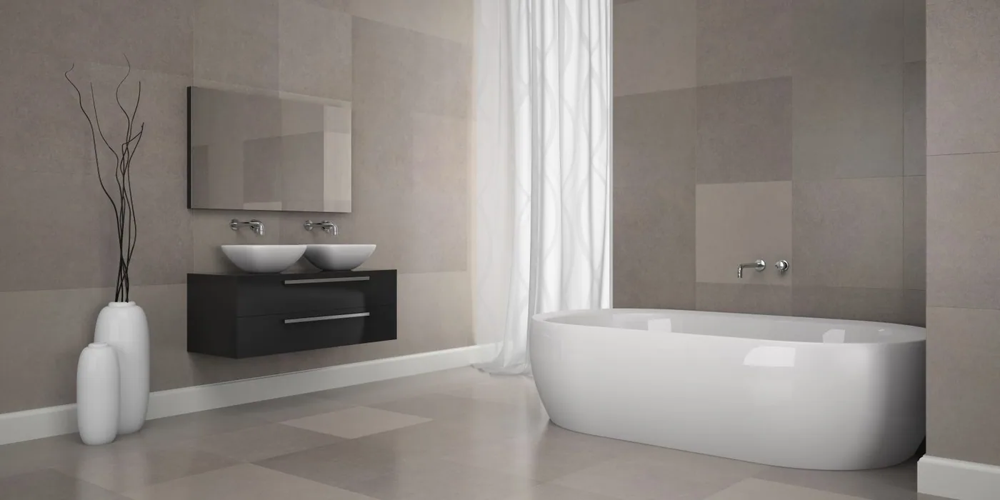
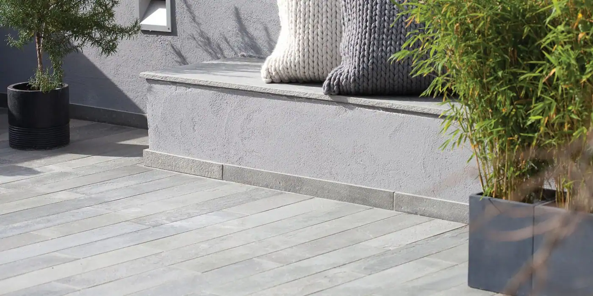
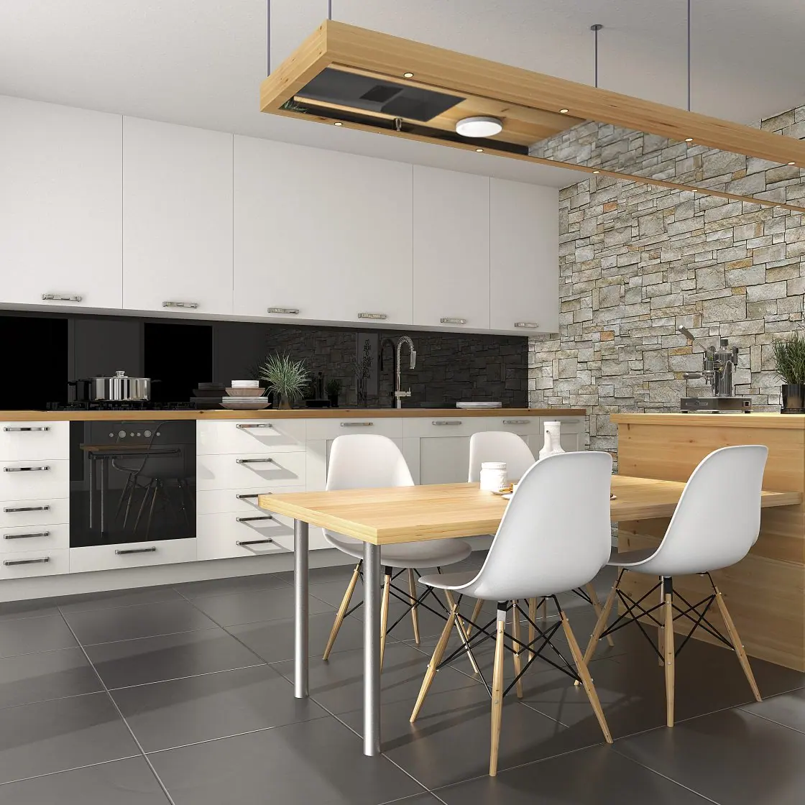
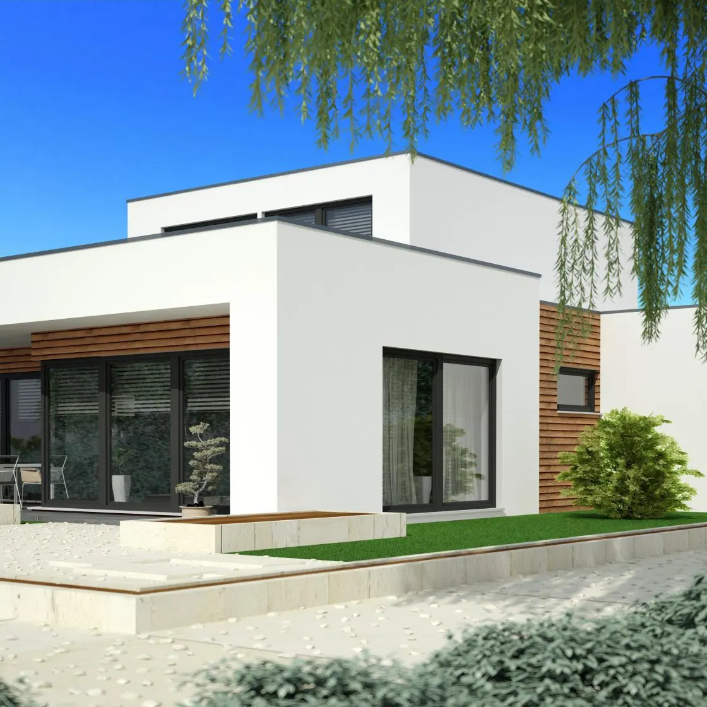

Hjem / Referanser
Arbeid vi har gjort
Et utvalg bilder fra jobbene våre: bad, kjøkken, uteanlegg og fasader.






Hjem / Referanser
Et utvalg bilder fra jobbene våre: bad, kjøkken, uteanlegg og fasader.



